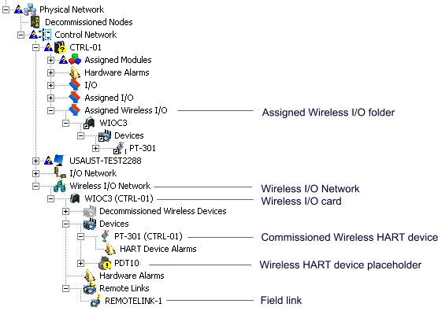

DeltaV Wireless I/O Card
The Wireless I/O Card provides an easy to use, high-availability redundant WirelessHART interface to a DeltaV system. You can easily integrate wireless field instruments into your control system with the DeltaV wireless I/O card (WIOC). Control engineers and maintenance technicians work with WirelessHART devices as easily as with wired devices.
The WIOCs reside on the DeltaV control network under the Wireless I/O Network. Each WIOC supports up to 100 WirelessHART transmitters. It installs into its own DeltaV I/O carrier and is connected to at least one Smart Wireless Field Link located in the field.
The WIOC is similar to the CHARM I/O card. The following rules and limits apply:
The total number of WIOC, CIOC, Zone 1, and Zone 2 remote I/O nodes in a DeltaV system is limited by the remote I/O node limit. Wireless Gateway nodes are counted separately.
Each device in the WIOC wireless network can be assigned to one controller. The signal data can only be accessed through the assigned controller. There is no direct path to the data by workstations or other controllers.
For a particular WIOC, the maximum number of controllers to which devices can be assigned is 4.
A controller can communicate with a total of 16 WIOC, CIOC, Zone 1, and Zone 2 remote I/O nodes.
Redundant wireless supports higher availability and redundancy. Each WIOC has a terminal block that connects power and signal wiring to a field link. Two WIOCs can be combined to form a redundant pair. A redundant WIOC connects to the control network with one primary network cable and one secondary network cable. Additional WIOCs can be connected in a daisy chain. This supports ease of installation, system design, and late changes by allowing the I/O subsystem to be expanded without a redesign of the control network switch port capacity. Redundant Field Links must be physically near each other for proper redundancy operation.
During a switchover, a redundant WIOC holds and reports the last values sent to the controller until the new active WIOC receives updates from the wireless devices. The values are marked BAD status only if the timeout is exceeded.
To ensure that WIOCs provide the highest possible I/O performance, external and dynamic references to diagnostic parameters of WIOCs are not reported in modules downloaded to controllers and do not resolve at run time. If you need to use these types of parameter references in your control strategy download the modules to a workstation's virtual controller.
The following figure shows the Wireless I/O Network with WIOC3 expanded to show the subfolders (including the automatically created REMOTELINK-1), one commissioned wireless device (PT-301), and one wireless device placeholder (TT-200).

WIOC3 has been assigned to controller CTRL-01 (it appears under the Assigned Wireless I/O folder of the controller).
Configuring control strategy with wireless devices is no different than configuring strategies that use wired or bussed devices. Wireless devices do not need to be present to configure a control strategy. AMS does not need to be present to configure a wireless I/O system. WIOCs appear in the Wireless I/O Network folder and are grayed out until the WIOC is commissioned with a physical device.
To implement wireless devices using Wireless I/O Cards:
Configure and commission Wireless I/O Cards
Configure and commission wireless devices
Assign WIOCs (or individual wireless devices) to controllers.
Assign device signals to AI HART, DI HART, or DO HART function blocks in a single control module.
A WIOC communicates with a maximum of four controllers. A controller communicates with maximum of 16 WIOC, CIOC, Zone 1, and Zone 2 I/O nodes. If an attempt to assign a wireless device exceeds either of these limits, an error dialog appears.
For information on creating and commissioning WIOCs and wireless devices, refer to the DeltaV Explorer online help.